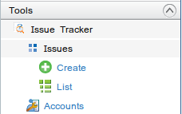
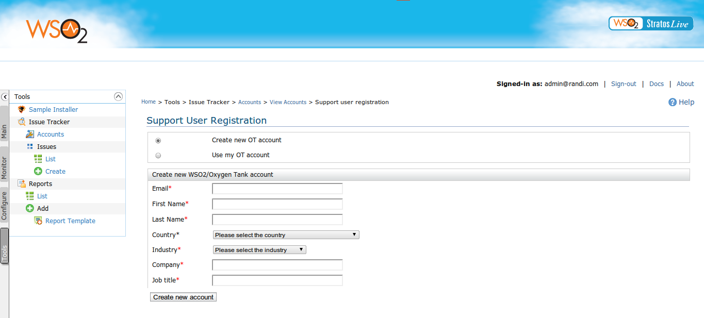
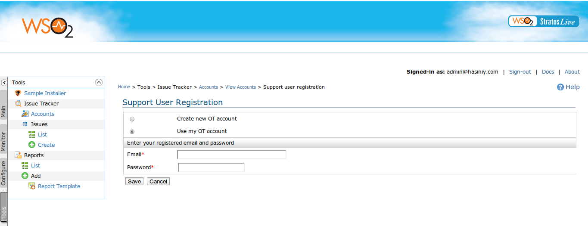

Issue Tracker Tool

Figure 1. Issue Tracker tool menu
The Issue Tracker tool enables StratosLive users to obtain support services for solving issues they encounter while consuming StratosLive services. Tenants with Demo accounts are eligible to obtain our free support service via StratosLive forum and are able to experience our comprehensive support service by upgrading their account to paid accounts.
Support User Registration Process
In order to report an issue you need to be first registered as a WSO2 Oxygen Tank (OT) member and associate your OT account with WSO2 Support service.
Registering an OT account
Go to Tools -> Issue Tracker -> Accounts -> Add new account Here you can either create a new OT account and associate it with the support service. If you already have an existing account it is quite possible to associate the existing account with the support service as well.

Figure2. Create new OT Accounts

Figure3. Use existing account and register to the support service
Reporting Issues
whenever you are encountered an issue or got something to clarify you are encouraged to report us. Users with Demo accounts in StratosLive are eligible to obtain our free support service via StratosLive forum. Users with paid accounts in StratosLive are exposed to more comprehensive support service and eligible to report and co-ordinate through JIRA. To report an issue go to Tools -> Issue Tracker -> Issues -> Add A link to the Forum will be displayed to Demo account holders and the following page will be displayed to other paid account holders. Provide issue details, attach the required attachments and click create button. Environment details about the service will be automatically captured and reported to the JIRA along with the issue.

Figure4. Create new issue
Attachments
Users can attach attachments to the issue. Additionally super admin is given the opportunity to attach a thread dump, bundle.info file and log file to the issue.
View Issues
Users can view details of issues reported to JIRA by them selves. For a tenant who changed his subscription from a paid to Demo, issues reported previously while holding the paid subscription are visible in a read only view. To view reported issues go to Tools -> Issue Tracker -> Issues -> List